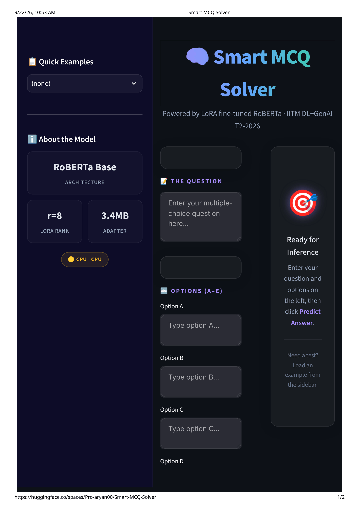

ranking system

Smart MCQ Solver
A ranking system optimized for MAP@3, taken through six milestones from TF-IDF baselines to RAG and LoRA fine-tuning. The strongest model was a LoRA fine-tuned RoBERTa-base, deployed as a Streamlit app.
stackPython · PyTorch · Transformers · PEFT/LoRA · Streamlit
0.75311 MAP@3
3.4 MB adapter
The useful result was not just the score: DeBERTa-v3, the apparently stronger pretrained model, failed to converge with its adapter at about 17% train accuracy.